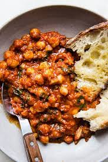

Braised Chickpeas

Description
This simple dish works as either a main course or a quick and easy side. Roasty tomatoes
and healthy chickpeas round out a fantastic plate element.
Ingredients
- 1 Can of chickpeas
- 1 Can diced tomatoes
- A lot of garlic
- Crusty bread or 1 C cooked Rice
- 2 C of Chard, any variety, or spinach.
Directions
- Cook chickpeas over medium high in a drizzle of cooking oil.
- Add garlic and tomatoes.
- Allow to simmer and thicken; then, add your finely chopped chard.
- Serve over cooked rice or next to crusty bread!